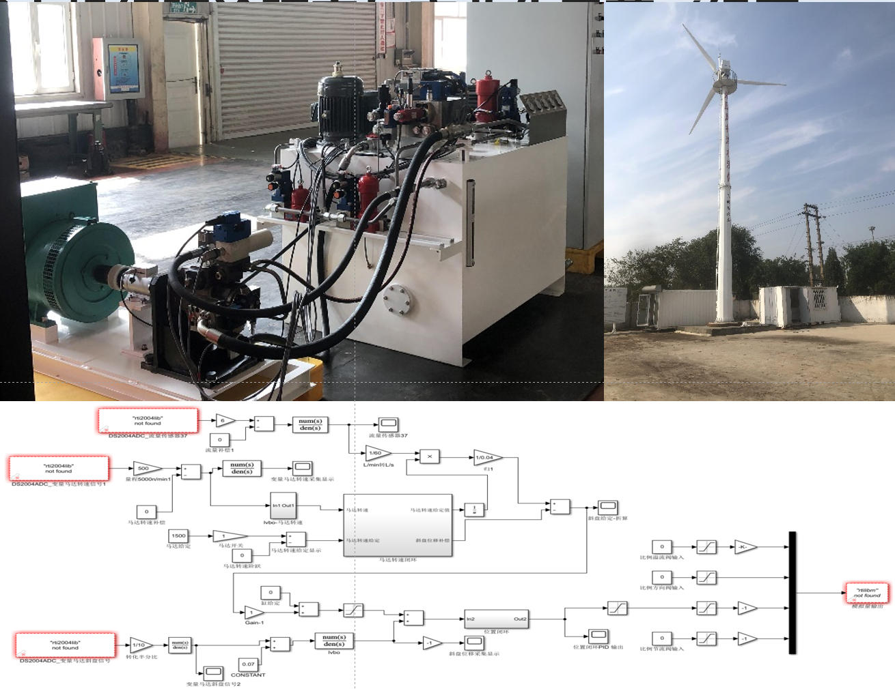
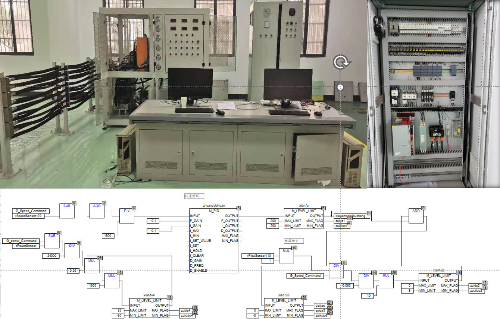
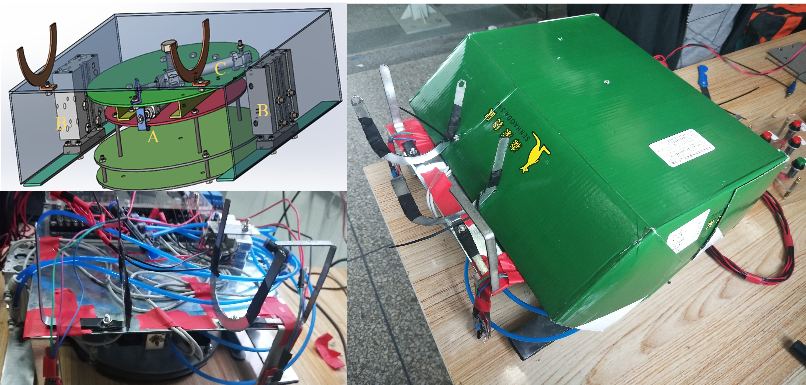
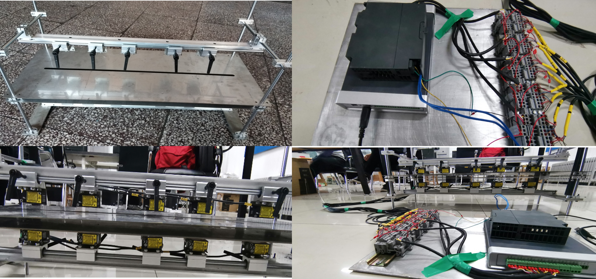

|
Projects
Wind Turbine Characteristics of Energy Storage Hydraulic Wind Turbine and Intelligent Control of Active Power
 |
Master's Thesis | 2023
Abstract: Taking the energy-storage hydraulic wind turbine generator system as the research object, this thesis analyzes the operating principles and control requirements of the unit, establishes mathematical models and state-space equations for the wind turbine and main transmission system, and evaluates the effects of multi-source disturbances on torque and active power. A Fuzzy-PID control strategy is proposed to achieve intelligent grid-connected speed regulation. Sliding mode control combined with an RBF neural network is introduced for autonomous compensation and fast active power control, while an energy storage subsystem is incorporated to enhance control responsiveness. The feasibility and control accuracy of the proposed strategies under multiple disturbances are validated on a 30 kW hydraulic wind power experimental platform, providing experimental support for intelligent active power control of hydraulic wind turbine generator systems.
|
Development of Servo Channel Control Module
 |
University-Enterprise Cooperation Project | 2021.09 – 2022.03
Abstract: This project focuses on the development of an electro-hydraulic servo channel control module, realizing functions including servo motion control, data processing, sensor signal acquisition, servo valve driving, and communication transmission. The module is integrated and deployed within a dedicated chassis, supporting independent multi-channel control for real-time control and data interaction in high-precision electro-hydraulic servo systems.
Responsibilities: Participated in the driver development for key chips including AD5754, PGA280, ADS127L01, and CH423; completed hardware testing and functional verification using serial debugging tools, and authored debugging plans and test reports; conducted functional simulation and joint debugging using Vivado, and assisted in code issue localization and system stability optimization.
|
Theoretical Research and Industrialization Demonstration of Hydraulic Wind Turbine Generator System
|
 |
University-Enterprise Cooperation Project | 2021.05 – 2021.09
Abstract: This project involves the construction of China's first hydraulic wind power demonstration prototype. Centered on grid-connected speed control and power regulation, the project encompasses control theory research, algorithm development, and system integration and commissioning, breaking through the key technology of stable grid connection for hydraulic transmission wind turbine generator systems and achieving stable grid-connected power generation operation.
Responsibilities: Participated in the on-site electrical system setup and wiring inspection of the 30 kW hydraulic wind turbine generator unit; designed and implemented grid-connected speed regulation and active power control based on MATLAB and dSPACE ControlDesk, supporting stable power generation of the unit, and participated in system testing and performance verification.
|
Ground System of Hydraulic Wind Turbine Generator Unit at Nanjing Institute of Technology
|
 |
University Strategic Cooperation Project | 2021.01 – 2021.05
Abstract: This project involves the construction of a research and experimental platform for hydraulic wind turbine generator units, integrating wind turbine simulation, hydraulic main transmission, main control, and generator grid-connection systems. The wind turbine characteristics are simulated based on a servo motor, and the hydraulic main transmission system is constructed using a fixed-displacement pump and variable-displacement motor. The main control system employs a PLC and a Moog controller to achieve logic control and closed-loop speed/power regulation, along with generator grid-connected operation. The platform supports system modeling, control strategy validation, and performance testing.
Responsibilities: Implemented rotational speed control of the servo motor via the Moog controller using MACS software in collaboration with control engineers; completed coordinated control of the grid-connection cabinet and Shark 200 to achieve safe grid connection and active power generation control of the test bench; conducted data acquisition and processing of system speed and grid-connected active power, carried out experimental analysis, and completed the project acceptance report.
|
Simulation Research on Slewing Performance Improvement of Truck-Mounted Crane
 |
University-Enterprise Cooperation Project | 2020.06 – 2020.12
Abstract: A mechatronic integrated simulation platform for a truck-mounted crane was developed to analyze instability issues during the slewing process. Based on given mechanism models and experimental data, a high-fidelity simulation model was established and iteratively optimized. On this basis, the mechanism underlying slewing instability was analyzed, key sources of the problem were identified, and the effectiveness of improvement measures was validated on the simulation platform. Final verification was completed through full-machine experiments.
Responsibilities: Collaborated with hydraulic engineers to complete hydraulic system modeling in AMESim and performed equivalent processing of the mechanical model to achieve mechatronic co-simulation; participated in the formulation and implementation of bench and full-machine test plans, and completed data acquisition and comparative analysis; identified the source of pressure pulsation during the slewing process based on experimental data and proposed a slewing stability control strategy.
|
Design of a 5000 kN Powder Compaction Hydraulic Press System
 |
Bachelor Thesis | 2019 – 2020
Abstract: Driven by industrial growth and policy initiatives in China, the demand for high-quality powder compaction products has been continuously increasing. This project presents the complete design of a 5000 kN powder compaction hydraulic press system, covering process flow analysis, hydraulic schematic design, and component selection. The valve system is organized into three valve blocks with full assembly design, while the oil tank and pump station adopt a horizontal layout to facilitate installation and maintenance. The final deliverables include a comprehensive set of engineering drawings covering the hydraulic schematic, valve block components and assemblies, pump station, and oil tank, achieving a complete system design and visualization that ensures efficient and reliable hydraulic system operation.
|
Pneumatic Transport Robot
|
 |
Mechatronic System Design Course Project | 2019
Abstract: This novel pneumatic crawling robot is actuated by compressed air and controlled via a PLC, enabling forward, backward, left-turn, right-turn, and automatic line-following functions. The robot consists of a locomotion structure, a support structure, and a steering structure, completing its motion cycle through coordinated actuation of the support and locomotion cylinders, with different motion directions achieved by varying the actuation sequence. The control system manages 13 inputs (cylinders, color sensors, directional and mode buttons) and 6 outputs (solenoid directional control valves). The design tightly integrates mechanical structure, pneumatic actuation, and PLC control, resulting in a novel, easy-to-operate system with strong controllability and automation capability.
Responsibilities: Responsible for scheme optimization and technical improvement within the team, undertook physical assembly, program development, and equipment debugging, authored patent documentation, and presented the project at the final defense and result review.
[Video]
|
Novel Non-Contact Thickness Measurement System
|
 |
Undergraduate Innovation and Entrepreneurship Training Program | 2018 – 2019
Abstract: Strip thickness measurement is a critical technology in high-end cold-rolled steel production. To address the insufficient accuracy of the existing structure, analysis revealed that the primary source of error was the misalignment of the strip itself. Based on this finding, a multi-sensor slider-rail measurement mechanism was designed, in which high-precision laser sensors positioned above and below the strip perform synchronized thickness measurements. The system achieves signal digitization, real-time transmission, and multi-point thickness acquisition, enabling high-precision reconstruction of the strip's cross-sectional profile and improving both measurement accuracy and stability.
Responsibilities: As project leader, led the overall scheme planning and technical route design, responsible for the optimization of the mechanical structure and measurement system, organized on-line debugging and experimental validation, authored technical reports and research documentation, and presented the project at the final defense and result review.
[Video]
|
|